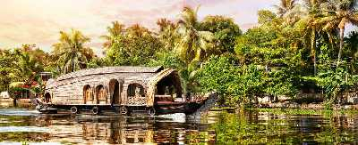

Alappuzha
Affectionately nicknamed the 'Venice of the East' by travellers from across the world, Alappuzha is a district of immense natural beauty. Embraced by the Arabian Sea in the west and a network of lakes, lagoons and freshwater rivers criss-crossing it, this backwater country is home toa vibrant animal and avian life. By virtue of its proximity to the sea, the town has always carved out an exclusive place for itself in the maritime history of Kerala. Renowned for its boat races, beaches, marine products and coir industry, the singularity of this land is the region called Kuttanad. A land of lush paddy fields referred to as the 'Rice Bowl of Kerala', it is one of the few places in the world where farming is done below sea level. This once prosperous trading and fishing centre is nowadays a world renowned backwater tourist destination.
Tourist Attractions

House Boats
Popularly known as the Venice of the east, Alleppey or Allapuzha is famous for its serene backwaters and their exceptionally scenic setting. Cruising on houseboats in Alleppey is the latest and probably the best addition to the list of ways you can enjoy the mesmerizing natural beauty of this quaint little town.
Alleppey Beach
Alappuzha is referred to as the Venice of the East which has always enjoyed an important place in the maritime history of Kerala. Presently it is famous for its boat races, backwater holidays, beaches, marine products and coir industry. Alappuzha beach is a popular picnic spot. The pier, which extends into the sea here, is over 137 years old. Entertainment facilities at the Vijaya Beach Park add to the attraction of the beach. There is also an old lighthouse nearby which plays a fascinating sight to the visitors from far and wide.